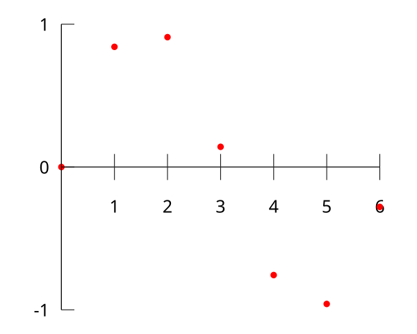
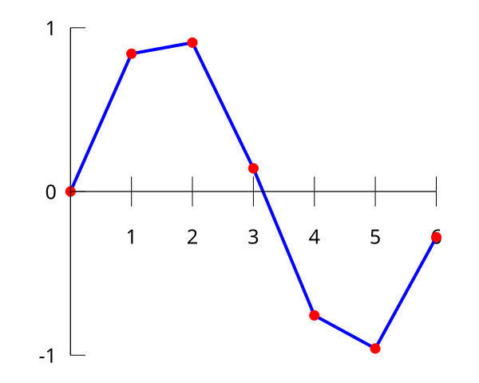
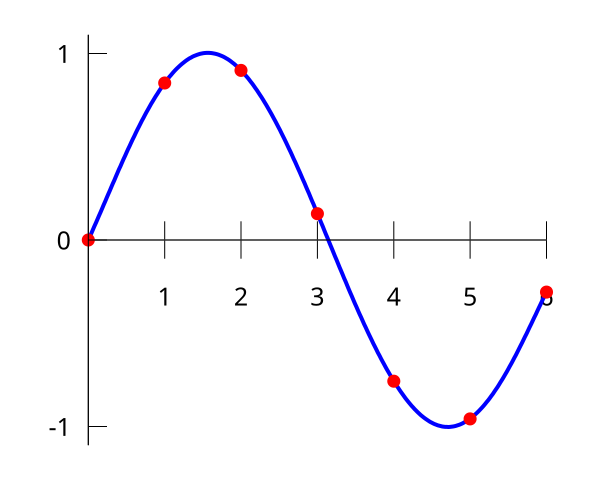

Interp
引入
插值是一种通过已知的、离散的数据点推算一定范围内的新数据点的方法．插值法常用于函数拟合中．
例如对数据点：
| $x$ | $0$ | $1$ | $2$ | $3$ | $4$ | $5$ | $6$ |
|---|---|---|---|---|---|---|---|
| $f(x)$ | $0$ | $0.8415$ | $0.9093$ | $0.1411$ | $-0.7568$ | $-0.9589$ | $-0.2794$ |

其中 $f(x)$ 未知，插值法可以通过按一定形式拟合 $f(x)$ 的方式估算未知的数据点．
例如，我们可以用分段线性函数拟合 $f(x)$：

这种插值方式叫做 线性插值．
我们也可以用多项式拟合 $f(x)$：

这种插值方式叫做 多项式插值．
多项式插值的一般形式如下：
???+ note "多项式插值" 对已知的 $n+1$ 的点 $(x_0,y_0),(x_1,y_1),\dots,(x_n,y_n)$，求形如 $f(x)=\sum_{i=0}^n a_ix^i$ 且满足
$$
f(x_i)=y_i,\qquad\forall i=0,1,\dots,n
$$
的多项式 $f(x)$．
下面介绍多项式插值中的两种方式：Lagrange 插值法与 Newton 插值法．不难证明这两种方法得到的结果是相等的．
Lagrange 插值法
由于要求构造一个函数 $f(x)$ 过点 $P_1(x_1, y_1), P_2(x_2,y_2),\cdots,P_n(x_n,y_n)$. 首先设第 $i$ 个点在 $x$ 轴上的投影为 $P_i^{\prime}(x_i,0)$.
考虑构造 $n$ 个函数 $f_1(x), f_2(x), \cdots, f_n(x)$，使得对于第 $i$ 个函数 $f_i(x)$，其图像过 $\begin{cases}P_j^{\prime}(x_j,0),(j\neq i)\P_i(x_i,y_i)\end{cases}$，则可知题目所求的函数 $f(x)=\sum\limits_{i=1}^nf_i(x)$.
那么可以设 $f_i(x)=a\cdot\prod_{j\neq i}(x-x_j)$，将点 $P_i(x_i,y_i)$ 代入可以知道 $a=\dfrac{y_i}{\prod_{j\neq i} (x_i-x_j)}$，所以
$$ f_i(x)=y_i\cdot\dfrac{\prod_{j\neq i} (x-x_j)}{\prod_{j\neq i} (x_i-x_j)}=y_i\cdot\prod_{j\neq i}\dfrac{x-x_j}{x_i-x_j} $$
那么我们就可以得出 Lagrange 插值的形式为：
$$ f(x)=\sum_{i=1}^ny_i\cdot\prod_{j\neq i}\dfrac{x-x_j}{x_i-x_j} $$
朴素实现的时间复杂度为 $O(n^2)$，可以优化到 $O(n\log^2 n)$，参见 多项式快速插值．
???+ note "Luogu P4781【模板】拉格朗日插值" 给出 $n$ 个点对 $(x_i,y_i)$ 和 $k$，且 $\forall i,j$ 有 $i\neq j \iff x_i\neq x_j$ 且 $f(x_i)\equiv y_i\pmod{998244353}$ 和 $\deg(f(x)) < n$（定义 $\deg(0)=-\infty$），求 $f(k)\bmod{998244353}$.
??? note "题解"
本题中只用求出 $f(k)$ 的值，所以在计算上式的过程中直接将 $k$ 代入即可；有时候则需要进行多次求值等等更为复杂的操作，这时候需要求出 $f$ 的各项系数．代码给出了一种求出系数的实现．
$$
f(k)=\sum_{i=1}^{n}y_i\prod_{j\neq i }\frac{k-x_j}{x_i-x_j}
$$
本题中，还需要求解逆元．如果先分别计算出分子和分母，再将分子乘进分母的逆元，累加进最后的答案，时间复杂度的瓶颈就不会在求逆元上，时间复杂度为 $O(n^2)$．
因为在固定模 $998244353$ 意义下运算，计算乘法逆元的时间复杂度我们在这里暂且认为是常数时间．
??? note "代码实现"
```cpp
--8<-- "docs/math/code/numerical/interp/interp_1.cpp"
```
横坐标是连续整数的 Lagrange 插值
如果已知点的横坐标是连续整数，我们可以做到 $O(n)$ 插值．
设要求的多项式为 $f(x)$，我们已知 $f(1),\cdots,f(n+1)$（$1\le i\le n+1$），考虑代入上面的插值公式：
$$ \begin{aligned} f(x)&=\sum\limits_{i=1}^{n+1}y_i\prod\limits_{j\ne i}\frac{x-x_j}{x_i-x_j}\ &=\sum\limits_{i=1}^{n+1}y_i\prod\limits_{j\ne i}\frac{x-j}{i-j} \end{aligned} $$
后面的累乘可以分子分母分别考虑，不难得到分子为：
$$ \dfrac{\prod\limits_{j=1}^{n+1}(x-j)}{x-i} $$
分母的 $i-j$ 累乘可以拆成两段阶乘来算：
$$ (-1)^{n+1-i}\cdot(i-1)!\cdot(n+1-i)! $$
于是横坐标为 $1,\cdots,n+1$ 的插值公式：
$$ f(x)=\sum\limits_{i=1}^{n+1}(-1)^{n+1-i}y_i\cdot\frac{\prod\limits_{j=1}^{n+1}(x-j)}{(i-1)!(n+1-i)!(x-i)} $$
预处理 $(x-i)$ 前后缀积、阶乘阶乘逆，然后代入这个式子，复杂度为 $O(n)$.
???+ note "例题 CF622F The Sum of the k-th Powers" 给出 $n,k$，求 $\sum\limits_{i=1}^ni^k$ 对 $10^9+7$ 取模的值．
??? note "题解"
本题中，答案是一个 $k+1$ 次多项式，因此我们可以线性筛出 $1^i,\cdots,(k+2)^i$ 的值然后进行 $O(n)$ 插值．
也可以通过组合数学相关知识由差分法的公式推得下式：
$$
f(x)=\sum_{i=1}^{n+1}\binom{x-1}{i-1}\sum_{j=1}^{i}(-1)^{i+j}\binom{i-1}{j-1}y_{j}=\sum\limits_{i=1}^{n+1}y_i\cdot\frac{\prod\limits_{j=1}^{n+1}(x-j)}{(x-i)\cdot(-1)^{n+1-i}\cdot(i-1)!\cdot(n+1-i)!}
$$
??? note "代码实现"
```cpp
--8<-- "docs/math/code/numerical/interp/interp_2.cpp"
```
Newton 插值法
Newton 插值法是基于高阶差分来插值的方法，优点是支持 $O(n)$ 插入新数据点．
为了实现 $O(n)$ 插入新数据点，我们令：
$$ f(x)=\sum_{j=0}^n a_jn_j(x) $$
其中 $n_j(x):=\prod_{i=0}^{j-1}(x-x_i)$ 称为 Newton 基（Newton basis）．
若解出 $a_j$，则可得到 $f(x)$ 的插值多项式．我们按如下方式定义 前向差商（forward divided differences）：
$$ \begin{aligned} \lbrack y_k\rbrack & := y_k, & k=0,\dots,n, \ [y_k,\dots,y_{k+j}] & := \dfrac{[y_{k+1},\dots,y_{k+j}]-[y_k,\dots,y_{k+j-1}]}{x_{k+j}-x_k}, & k=0,\dots,n-j,~j=1,\dots,n. \end{aligned} $$
则：
$$ \begin{aligned} f(x)&=[y_0]+y_0,y_1+\dots+y_0,\dots,y_n\dots(x-x_{n-1})\ &=\sum_{j=0}^n [y_0,\dots,y_j]n_j(x) \end{aligned} $$
此即 Newton 插值的形式．朴素实现的时间复杂度为 $O(n^2)$.
若样本点是等距的（即 $x_i=x_0+ih$，$i=1,\dots,n$），我们可以推出
$$ [y_k,\dots,y_{k+j}]=\frac{1}{j!h^j}\Delta^{(j)}y_k, $$
其中 $\Delta^{(j)}y_k$ 为 前向差分（forward differences），定义如下：
$$ \begin{aligned} \Delta^{(0)}y_k & := y_k, & k=0,\dots,n, \ \Delta^{(j)}y_k & := \Delta^{(j-1)} y_{k+1}-\Delta^{(j-1)} y_k, & k=0,\dots,n-j,~j=1,\dots,n. \end{aligned} $$
令 $x=x_0+sh$，则 Newton 插值的公式可化为
$$ f(x)=\sum_{j=0}^n \binom{s}{j}j!h^j[y_0,\dots,y_j]=\sum_{j=0}^n \binom{s}{j}\Delta^{(j)}y_0. $$
??? note "代码实现（Luogu P4781【模板】拉格朗日插值）"
cpp
--8<-- "docs/math/code/numerical/interp/interp_3.cpp"
横坐标是连续整数的 Newton 插值
例如：求多项式 $f(x)=\sum_{i=0}^{3} a_ix^i$ 的系数，已知 $f(1)$ 至 $f(6)$ 的值分别为 $1, 5, 14, 30, 55, 91$．
$$ \begin{array}{cccccccccccc} 1 & & 5 & & 14 & & 30 & & 55 & & 91 & \ & 4 & & 9 & & 16 & & 25 & & 36 & \ & & 5 & & 7 & & 9 & & 11 & \ & & & 2 & & 2 & & 2 & \ \end{array} $$
第一行为 $f(x)$ 的连续的前 $n$ 项；之后的每一行为之前一行中对应的相邻两项之差．观察到，如果这样操作的次数足够多（前提是 $f(x)$ 为多项式），最终总会返回一个定值．
计算出第 $i-1$ 阶差分的首项为 $\sum_{j=1}^{i}(-1)^{i+j}\binom{i-1}{j-1}f(j)$，第 $i-1$ 阶差分的首项对 $f(k)$ 的贡献为 $\binom{k-1}{i-1}$ 次．
$$ f(k)=\sum_{i=1}^n\binom{k-1}{i-1}\sum_{j=1}^{i}(-1)^{i+j}\binom{i-1}{j-1}f(j) $$
时间复杂度为 $O(n^2)$.
C++ 中的实现
自 C++ 20 起，标准库添加了 std::midpoint 和 std::lerp 函数，分别用于求中点和线性插值．